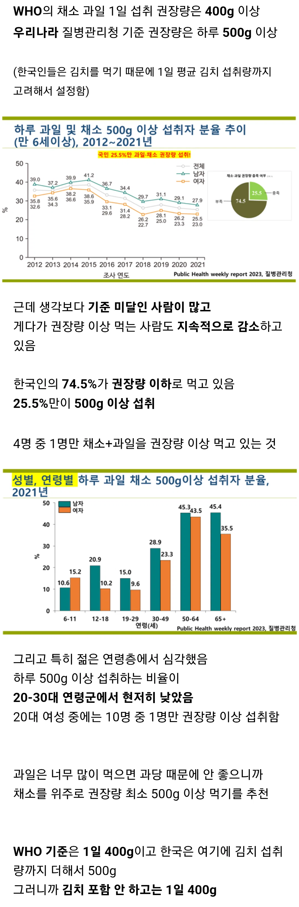
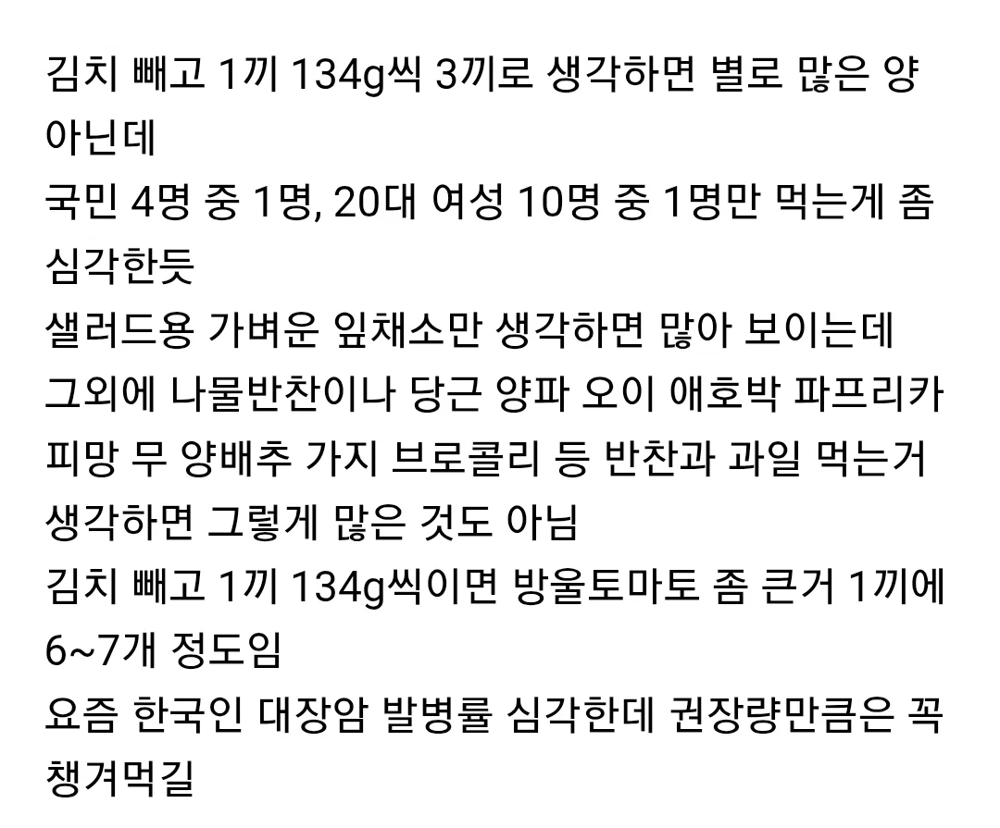
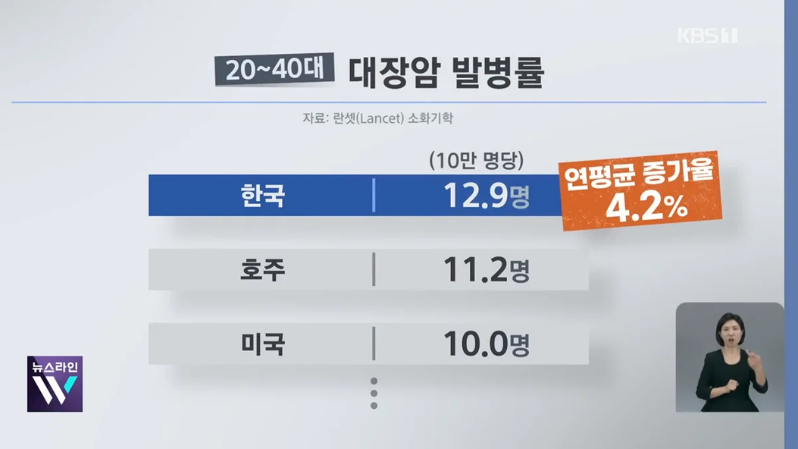

https://theqoo.net/square/4332514220



https://theqoo.net/square/4332514220



엽채류만 생각하면 엄청난 양이지만 무 호박 오이 당근 가지 토마토 수박 요런 식으로
세끼로 나눠서 먹을만하지 않나
정제탄수화물이랑 가공식품은 많아서 못 먹어요 하지 않던데...
난 방토만 하루 500그램 섭취함
하루에 방토 500g 한팩먹어야되? 돈이 돈이.. 어휴
ㅅㅂ 우리회사밥 저딴거 절대안나옴
신선한 채소가 먹고싶다
식이섬유는 어떤 성분 효과로 작용해서 그런게 아니고 진짜 물리적으로 팽창하고 장 내부를 긁어 밀어내주는 역할임..
김치를 하루에 한포기 먹으면 되는거지?
내가 야채 매일 많이 먹는데 일일 500g 말이 안되는데? 3끼 기준으로 총 150g도 많이 먹는거라고 보는데 적절히 섭취하면서 나쁜 음식 줄이는게 압도적으로 좋을듯. 대장암 발병률이 오로지 야채섭취량에 의해서 좌우되는게 아니니깐. 그리고 미세먼지가 심한 한국 거주자에게는 브로콜리가 좋음. 설포라판 성분이 폐 기관지를 보호해주고 강력한 항암효과도 나타냄
개붕이 말 들으니까 야채 팔아먹기 위한 마케팅으로 보이낟!!!
같은 100그람이라도 무100그람이항 양배추100그람이랑 양이달라서ㅋㅋ
비싸서 못먹어 시발련들아
야채때문에 맨날 점심 한식뷔페가는데 ㅋㅋ
500g? 양도 가격도 감당 안될듯
매일 햄부기로 채소 챙겨먹는중
500그람이 말이되나 쌈밥 정식에나오는 채소 다 합쳐도 500안되겟구만
채소 500그람이면 진짜 존나게 많은건데....
샐러드 같은 녹색풀로 하루 식이섬유 권장량 25g을 채우려면 불가능함. 인간은 인간이지 침팬치가 아님. 권장량 채우려면 쌀밥을 버리고 오트밀/ 통밀파스타/ 통밀빵 /콩류를 섭취해야함.
제일 만만한 양배추로 대충 작게 썰고 마요네즈+설탕+식초 플라스틱 통에 넣어서 쉐킷하면 코울슬로 됨 존나 쉽고 가장 먹을만함
양배추 가성비 짱임. 그걸로 하루 400g 채움
이게 어렵나..토마토홀 2.5~3k 짜리 6개 들이 1박스 사다놓고 소분해서 냉동실에 넣어두고 해동시켜 매일 먹으면 쌉가능인데 가성비도 좋고.지금 최저가로 사면 100그램에 161원 꼴로도 구매가능. 토마토를 워낙 좋아하는터라 그덕에 고칼륨혈증을 얻었지..6.8찍으니까 의사가 나처럼 칼륨 수치높은 사람 처음봤다면서 경악하더라;.암튼 토마토 홀 사서 먹어. 1년 사시사철 신선하게 먹을수 있고 가성비도 개쩐다.
감자튀김 다 뒤져따
나물반찬 너모 좋아
과일너무비싸
하루 한끼는 버거킹에서 올엑스트라에 코울슬로 곁들여 먹으니까 어느정도 충족되지 않을까?
나물이나 채소류 반찬은 밥집에서 나오는데 과일이 챙겨먹기 귀찮네
양배추 대쳐두면 뭐든 싸먹기 좋음